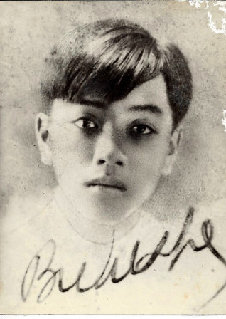

Chính tên là Lê Quang Lương. Quê quán: Thu Xà (Quảng Ngãi).
Đã đăng thơ: Tiếng dân, Tiểu thuyết thứ năm. Người mới... (ký Lê Mộng hoặc Bích Khê).
Đã xất bản: Tinh huyết (1939).

.
Tôi đã gặp trong "Tinh huyết" những câu thơ hay vào bực nhất trong thơ Việt Nam.
Ô! Hay buồn vương cây ngô đồng
Vàng rơi! Vàng rơi! Thu mênh mông.
hay mấy câu này trích trong bài "Tranh loã thể":
Dáng tầm xuân uốn trong tranh Tố nữ.
Ô tiên nương! Nàng lại ngự nơi này?
Nàng ở mô! Xiêm áo bỏ đâu đây?
Đến triển lãm cả tấm thân kiều diễm.
Nàng là tuyết hay da nàng tuyết điểm?
Nàng là hương hay nhan sắc lên hương?
Mắt ngời châu rung ánh sóng nghê thường;
Lệ tích lại sắp tuôn hàng đũa ngọc
Đêm y huyền ngủ mơ trên mái tóc
Và chút trăng say đọng ở làn môi
Mấy câu ấy đã được Hàn Mạc Tử phẩm bình bằng những lời xứng đáng: "Thi sĩ Bích Khê là người có đôi mắt rất mơ, rất mộng ảo, nhìn vào thực tế thì sự thực sẽ thành chiêm bao, nhìn vào chiêm bao lại thấy xô sang địa hạt huyền diệu... Ở "Tranh loã thể", sự trần truồng dâm đãng đã nhường lại cho ý vị nên thơ của hương, của nhạc, của trăng, của tuyết. Quả nhiên là một sự không khen thanh tao quá đến ngọt lịm cả người và cả thơ".[1]
Vừa bước vào đã thấy vàng ngọc sáng ngời như thế, ai không tin đây là biệt thự một nhà triệu phú. Huống chi chủ nhân còn nói: "Không, quý gì những vật mọn ấy! Kho tàng của tôi chính ở trong mấy phòng kia" [2]. Nhưng tôi chưa thể nói nhiều về Bích Khê. Tôi đã đọc không biết mấy chục lần bài Duy Tân [3]. Tôi thấy trong đó những câu thật đẹp. Nhưng tôi không dám chắc bài thơ đã nói hết cùng tôi những nỗi niềm riêng của nó. Hình như vẫn còn gì nữa... Còn các bài khác hoặc chưa xem hoặc mới đọc có đôi ba lần. Mà thơ Bích Khê, đọc đôi ba lần thì cũng như chưa đọc.
Novembre- 1941
Chú thích:
[1] Tựa Tình Huyết
[2] Trong một bức thư gửi cho chúng tôi đề ngày 7 -1 – 41, Bích Khê nói rằng ba bài người thích nhất là ‘‘Duy Tân’’ ‘‘Nấm mộ Bích Khê’’ ‘‘Giờ trút linh hồn’’. Trong một bức thư khác đề ngày 25 – 10 – 41, Bích Khê lại nói người thích bài ‘‘Xuân tượng trưng’’ hơn cả
[3] Trích theo đây
DUY TÂN
Đường kiến trúc nhịp nhàng theo điệu mới
Của lời thơ lóng đẹp. Hạt châu trong [1]
Hạt châu trong ngời nhỏ giọt vô lòng [2]
Tràn âm hưởng như chiều thu sóng nắng.
Trong vòm xanh. Màu cưới màu, bình lặng,
Gây phương phi: chiếu sáng ngả sang mờ
Vì hình dung những sắc mát, non, tơ,
Như mặt trời mọc qua khóm liễu, một
Hoàng hôn. Ôi đàn môi, chim báu tới:
Chữ biến hình ảnh mới, lúc trong ngâm
Chữ điêu khắc, tỉa nghệ thuật sầu câm,
Đầy thẩm mỹ như một pho thần tượng.
Lúc trong ngâm, giữa kho vàng mộng tưởng,
Múa song song khiêu vũ dưới đêm hồng
(Những con cừu tim trẻ mướt như lông
Nên da thịt lên làn sa lụa mỏng,
Mỗi con cừu bốc lên men hy vọng...)
Thơ nhịp nhàng ý nhị nhịp theo Thơ.
Tôi cắn vào trái bổ vỏ xanh mơ
Tìm chất quý thơm tinh mùi khoái lạc
Bằng hơi mộng, trong hàm răng, tản mác
Mộng?
Thiên tài?
Trên hỗn độn khoả thân
Đẹp tỉ mỉ, hỡi Rung động truyền thần
Ròng âm nhạc của lòng trai ấp mái
Người hoạ điệu với thiên nhiên, ân ái
Buồn, và xanh trờị (Tôi trôi với bờ
Êm biếc - khóc với thu: lời úa ngô
Vàng... khi cách biệt - giữa hồn xây mộ -
Tình hôm qua - dài hôm nay thương nhớ,
Im lặng nhìn bông ý, lặng lờ lên
Những dáng hình thanh khí...) Giữa mông mênh,
Đường nhiếp ảnh, sắc khua màu - Tiếng thở
Hỡi hội hoạ, đến muôn đời nức nở.
Ta nhịp nhàng ý nhị nhịp theo ta
Lời nối lời bố thí lộc Tinh hoa
Của Âm điệu, mơ màng run lẩy bẩy
Một hỗn hợp đẹp xô bồ say dậy
Bằng cảm tình, bằng hình ảnh yêu thương
Và mới mẻ - trên viễn cổ Đông phương!
(Ai có nghe sức tiềm tàng bí mật?)
Thơ loã thể! - Giai nhân tuần trăng mật,
Nữ thần ơi! Ta nô lệ bên người!
(Người mới)
[1 – 2] Mời sửa. Trên Người mới
Của lời thơ lòng đẹp. Tiếng ươm hương
Tiếng ươm hương hòa nhạc vận du dương
XUÂN TƯỢNG TRƯNG [1]
Hỡi lời ca man dại
Ðiệu nhạc thở hơi rừng
- Ðêm nay xuân đã lại
Thuần tuý là tượng trưng -
Nâng lên núm vú đồi
Sữa trăng nhi nhỉ giọt
Bay qua cụm liễu khơi
Những cườm tay điểm hột
Sương. Phất phơ lau lách
Khẽ uốn mình giai nhân:
Ðường non kheo điêu khắc
Những dáng hình khoả thân:
Lụa mây nẩy vàng chạm
Tía ngọc bén màu ngân...
Chủ xuân đang triển lãm
Lời ca như hạc theo
Gió lên. (Tình múa reo
Những điệu vàng châu báu
Dường có con chim báu
Rỉa cánh trên ngai lòng)
Loè xoè màu lông công
Vườn thơm khua sắc mát:
Rồng uốn vóc từng cong
Áo bạch mai khoát khoát
Môi đào chờ khoái lạc...
Hồn tôi như đỉnh hương
Bốc lên mình thánh giá!
Ý xuân mát đến xương
Ngậm tuyết phun lã chã!
(Người mới)
[1] Chúng tôi, trích bài này vì chìu theo lời yêu cầu của Ô.Bích Khê.